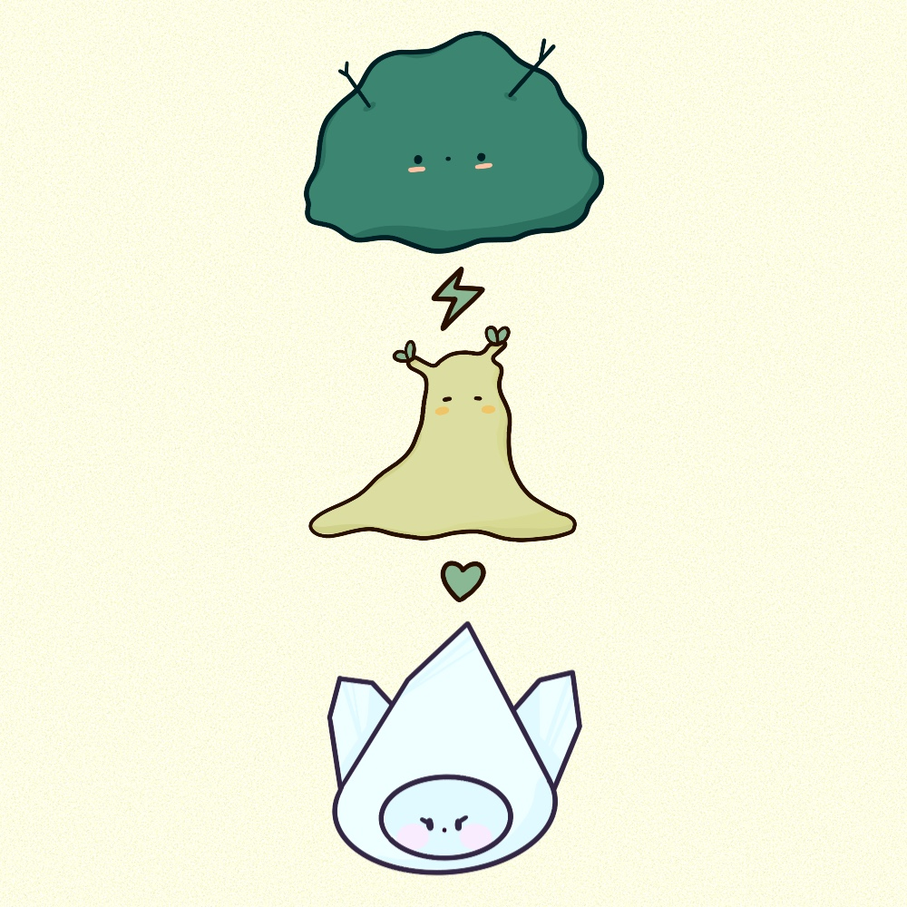
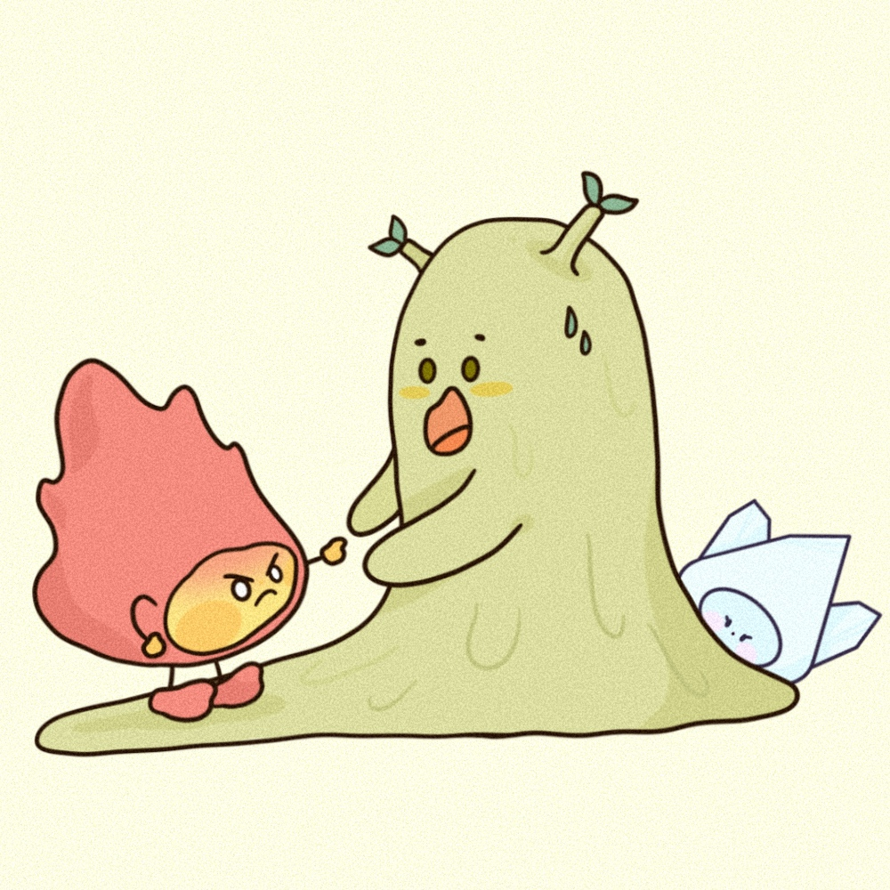
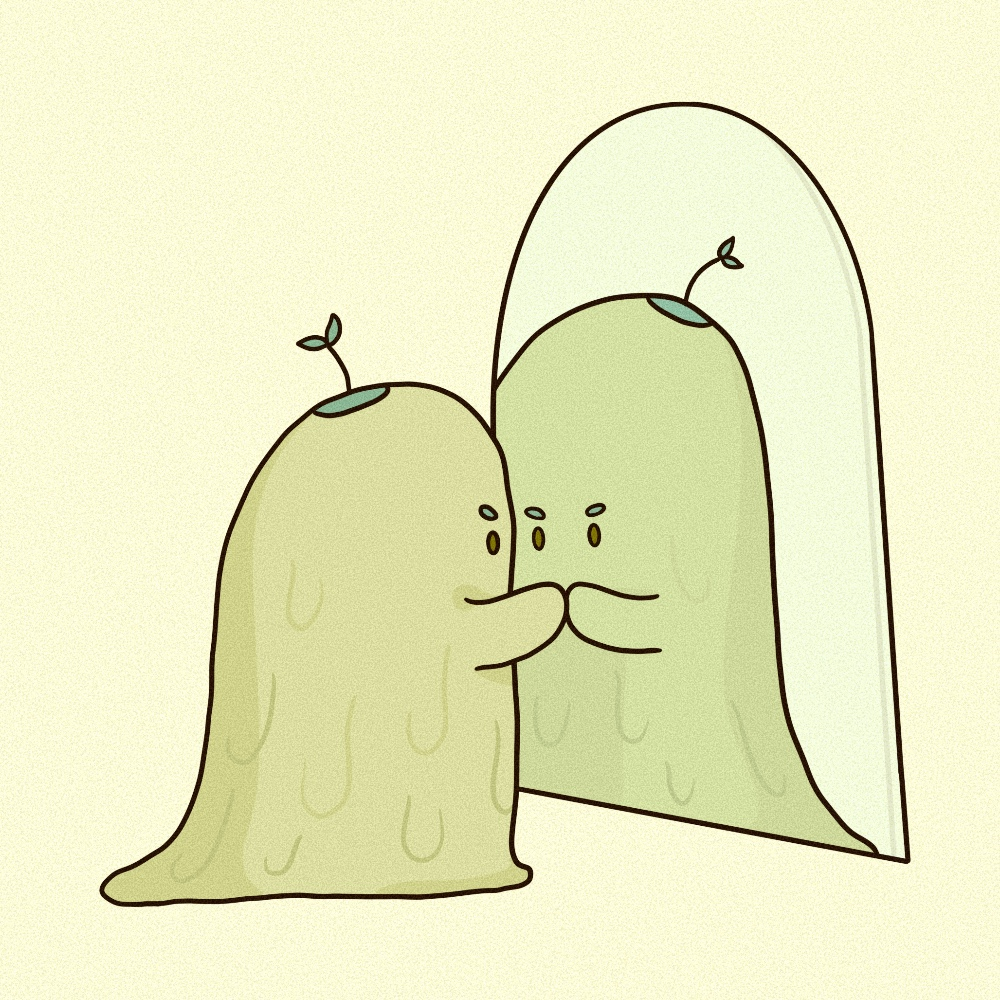
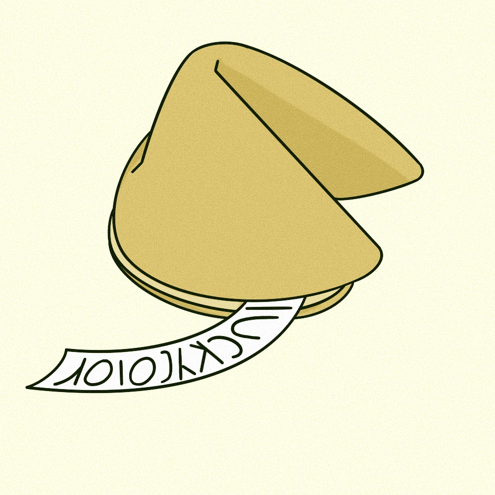
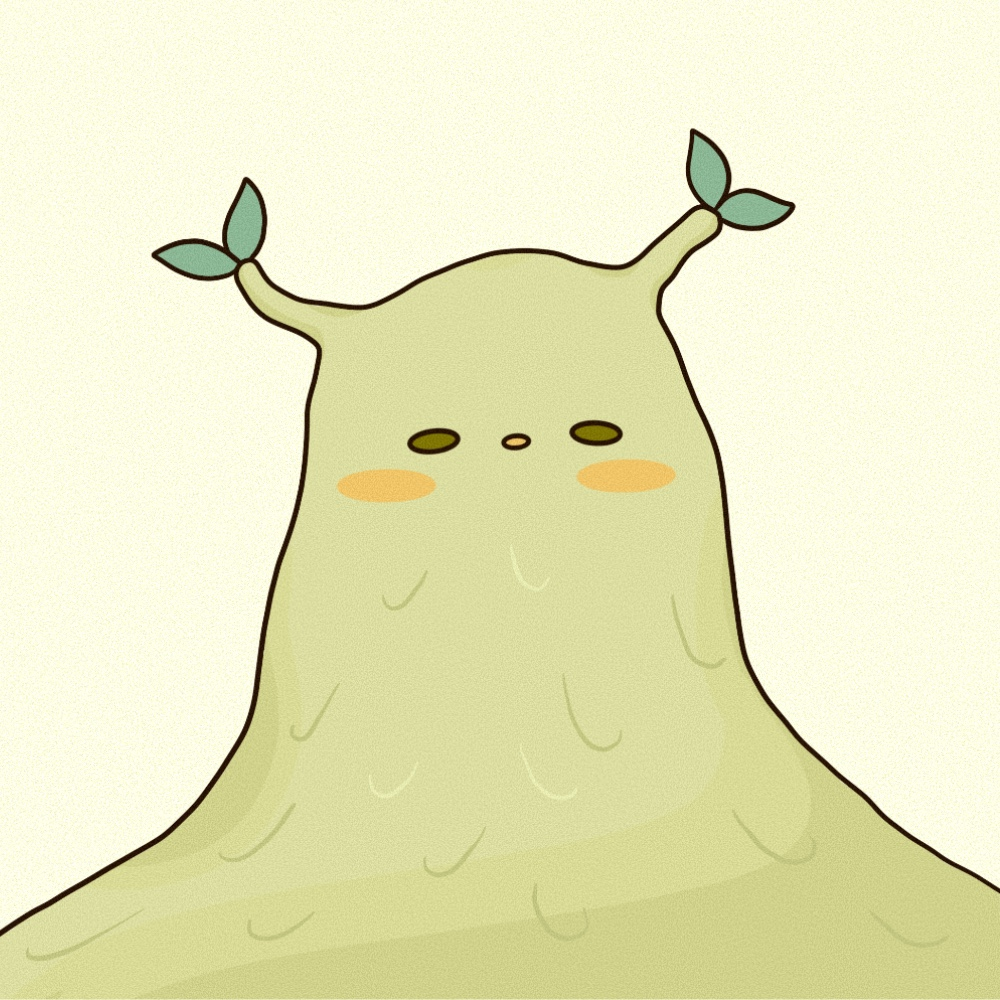

토의 오행

토는 목오행을 무서워 하고 금오행을 좋아한다.

말을 조리 있게 잘 하여 사람들에게 설득을 잘 시킨다.

균형과 조화
: 대지가 모든 것을 포용하듯 사람을 품는 능력이 좋다.
: 대지가 모든 것을 포용하듯 사람을 품는 능력이 좋다.

중재자의 역할
: 화와 금사이에서 화기를 조절할 때 그 존재가 드러난다.
즉, 화가 없을 때 토의 존재를 확인하기가 쉽지않다.
: 화와 금사이에서 화기를 조절할 때 그 존재가 드러난다.
즉, 화가 없을 때 토의 존재를 확인하기가 쉽지않다.

부동산 중개업처럼 중재 조절을 필요로 하는 일이 적성이다.

토목공사나 도자기를 굽는 일 등 흙을 만지는 일을 추천한다.

인내력과 겸손함을 가지며 책임감이 강해 신중한 성격이다.

내장 기관 : 위장
스트레스가 위로 전달되어 위장병에 주의해야 한다.
스트레스가 위로 전달되어 위장병에 주의해야 한다.

자아성찰과 발전에 관심이 많으며
오행 중 토오행의 사람을 이해하는 것이 가장 어렵다.
오행 중 토오행의 사람을 이해하는 것이 가장 어렵다.

대표색 : 노란색
토가 많은 사람은 노란계열을 피해라.
토가 많은 사람은 노란계열을 피해라.

흙의 원소